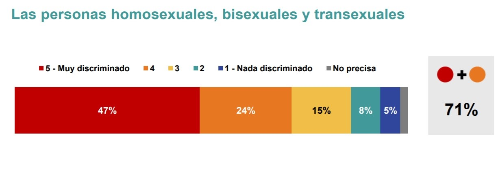
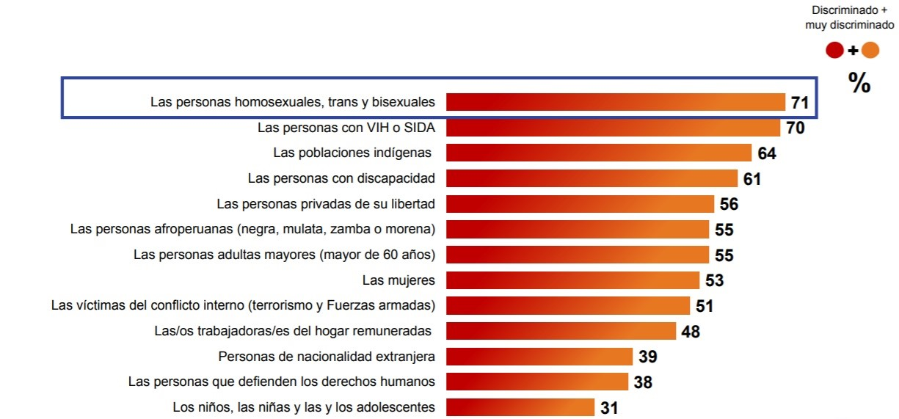
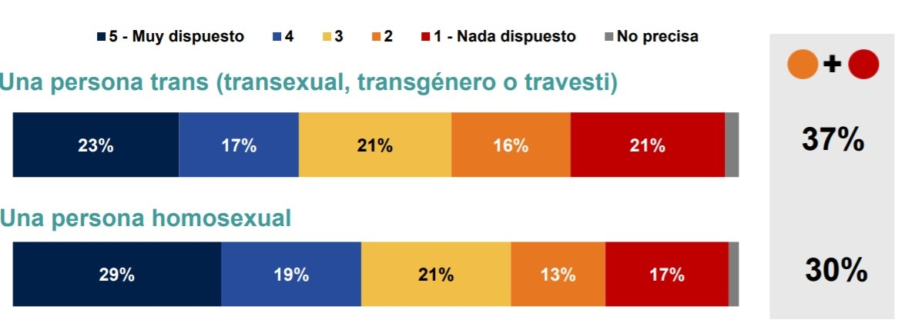
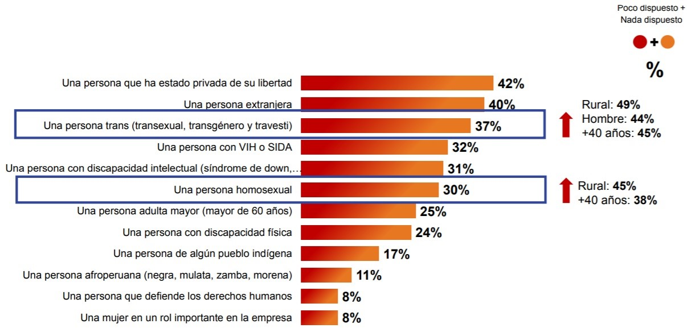
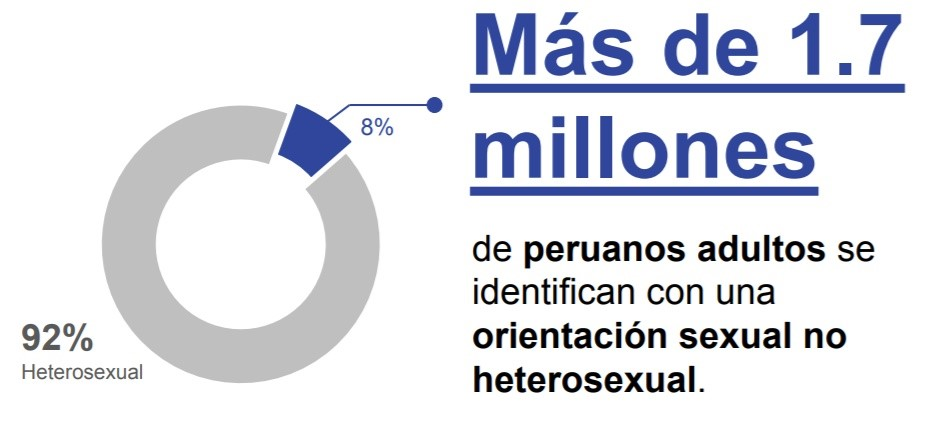
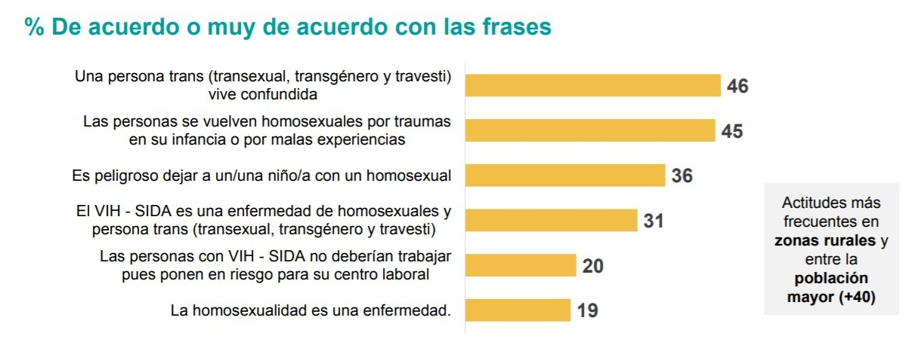

Los retos de la comunidad LGBT y UTEC Pride
Cada 28 de junio se conmemora el Día Internacional del Orgullo LGBT+ a nivel mundial desde los disturbios de Stonewall en 1969.
Escrito por:
Diana Salazar y Nayeli Limachi
06/07/2020
Comunidad LGBTIAQ+
La trascendencia de la comunidad LGBTIAQ+ involucra la lucha por el reconocimiento de los derechos de cualquier persona independientemente de su orientación sexual.
Origen del día del orgullo
Esta celebración se realiza cada 28 de junio debido a que se conmemora una serie de manifestaciones que tuvieron lugar en un pub neoyorquino conocido como Stonewall en el año 1969, en respuesta a la policía tras dirigir una redada contra este lugar. Esta fecha significó el comienzo de un movimiento de liberación. Sin embargo, esta celebración no se debe limitar solo a un día, sino que debe mantenerse presente a través de nuestras acciones durante todo el año.
Situación actual de la comunidad LGBT en el Perú
La reciente encuesta publicada por IPSOS respecto a la comunidad LGBT, realizada a 3312 personas mayores de edad entre hombres y mujeres desde el 7 hasta el 25 de noviembre del 2019, muestra lo siguiente:
Respecto a la discriminación que sufre la población LGBT en el Perú, el 71% de los encuestados considera que es una de las más discriminadas.
 Esta situación se mantiene si la relacionamos con la de otros grupos vulnerables.
Situación laboral
En este ámbito, el 37% de los encuestados no estaría dispuesto a contratar en una empresa a una persona transexual; mientras que el 30% mantiene la misma posición respecto a una persona homosexual. Además, es necesario precisar que este porcentaje se incrementa en zonas rurales, hombres y personas mayores de 40 años.
En relación a otros grupos vulnerables, la comunidad LGBT continúa siendo una de las más marginadas y se evidencia un mayor rechazo a las personas transexuales.
 El siguiente gráfico muestra que aún se mantienen altos porcentajes de personas que fundamentan su percepción sobre la comunidad LGBT con estereotipos y actitudes discriminatorias. Esto se da con mayor frecuencia en zonas rurales y dentro una población mayor de 40 años.
Medición de la población no heterosexual
También, es importante destacar que en el Perú, según la encuesta realizada, se verifica que hay 1.7 millones de personas adultas que se identifican como no heterosexuales. Esto representaría el 8% de la población del Perú.
 Entrevista a UTEC Pride
UTEC Pride es una organización que promueve la igualdad e inclusión de la comunidad LGBTIAQ+ en UTEC. Actualmente la directiva está compuesta por: Rodrigo Chávez – Presidente, Sixto Corrales – Vicepresidente, Gabriel Suárez –Recursos Humanos y Vannia Curay – Marketing. En esta oportunidad se entrevistó a Sebastián Ruiz, miembro y expresidente de UTEC Pride.
- ¿Qué factores influyeron en la creación de esta asociación estudiantil?
La asociación surgió, principalmente, con el propósito de poder conocer a los estudiantes de la comunidad LGBTIAQ+, interactuar entre ellos y brindarse apoyo mutuo.
- ¿Puedes comentar brevemente sobre las actividades que viene realizando UTEC Pride?
La más reciente actividad que se realizó fue mediante una plataforma virtual. Esta consistió en diversos juegos en los que se discutía y conversaba sobre temas de género y sexualidad, con la finalidad de reforzar los conocimientos sobre ambos conceptos.
Entre otras actividades realizadas en años anteriores se encuentra un conversatorio liderado por Cecilia Villanueva, madre activista que se dio a conocer por su presencia en una marcha LGBT+; además de charlas sobre orientación sexual, identidad de género y prevención de ITS, con integrantes de una clínica especializada en prevención de VIH. También, se organizó un concurso que constaba de publicar una foto con el hashtag “soy aliad@”, haciendo un ademán de salida de un closet que colocaron cerca al comedor, el cual tenía una bandera LGBT+ dentro.
Por último, para celebrar el aniversario de esta asociación, se creó un evento llamado Pride Gala, en donde se premia a los miembros más activos.
- Desde tu percepción, ¿cuál es la situación actual de la comunidad LGBTIAQ+ en la universidad?
Si bien es cierto, aún existe cierto tipo de micro-discriminación hacia la comunidad, ya sean chistes o comentarios homofóbicos.
Por otro lado, la transexualidad se encuentra más vulnerable que la homosexualidad y esto se ve reflejado en burlas y comentarios más ofensivos al respecto. La expresión de género es menos aceptada; por tal motivo, se deben reforzar las conductas de aceptación e inclusión, y cito al entrevistado: “Pienso que alguien trans en UTEC la tendría bastante difícil. Hablo en condicional porque aún no se ha dado un caso de discriminación directa, pero si yo fuera trans me daría mucho miedo estar en el campus”.
- ¿Cómo pueden contribuir las autoridades universitarias y (nosotros) los alumnos para garantizar un ambiente ideal en el desarrollo de esta comunidad?
UTEC ya cuenta con políticas que incluyen a personas con orientaciones sexuales y expresiones de género diferentes. Una propuesta es que en el carné que otorga la universidad se puedan visibilizar el sexo y el nombre social con el cual el estudiante se identifica. Asimismo, sería bueno implementar charlas dirigidas a todos los estudiantes para entender conceptos básicos de la comunidad LGBTIAQ+, con el fin de promover la inclusión y suprimir la discriminación hacia esta misma.
- Algún mensaje final:
Todos los lectores están invitados a fomentar la visibilización de UTEC Pride. “Mientras más personas conozcan la asociación, hay más posibilidades de que esa persona encuentre un lugar seguro si es que está pasando por un mal momento”, indica. También sería bueno que todos nosotros mantengamos la mente abierta respecto al tema y facilitar oportunidades a esta asociación a través de las actividades que realiza.
Conclusión
Es importante reconocer la lucha de la comunidad LGBTIAQ+ respecto a una realidad en la que todavía son marginados y frente a una legislación que limita su libertad y derechos. Sin embargo, este cambio también es responsabilidad de las personas ajenas a esta situación. Si comenzamos a crear un ambiente de empatía y conciencia respecto a la situación de poblaciones vulnerables como esta, lograremos fortalecer nuestros vínculos como sociedad y reducir los niveles de discriminación en nuestro país y el mundo.
Referencias
Rivas, L., Ortiz, E., Casado, P. and Bayod, M., 2019. Así Nació El Día Del Orgullo Gay. [online] El País. Available at: Link [Accessed 6 July 2020].
Lamba Legal and CWLA, 2013. Conceptos Básicos Sobre El Ser LGBT. [online] Lambda Legal majing the case for equality. Available at: Link [Accessed 6 July 2020].
Ipsos, 2019. II Encuesta Nacional De Derechos Humanos: Población LGTB. [online] Ipsos. Available at: Link [Accessed 6 July 2020].